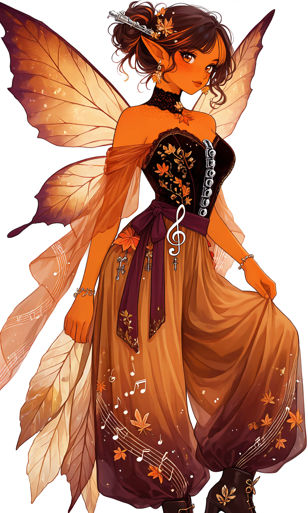
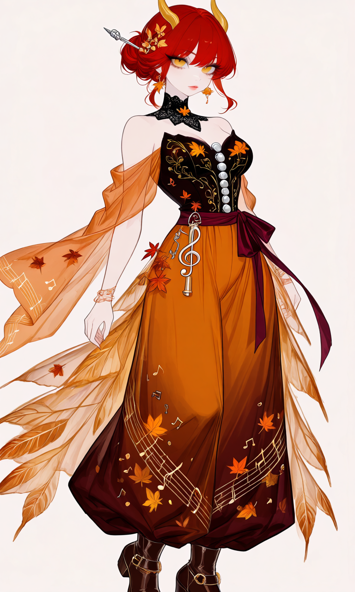

Maplewood Rhapsody

Outfit Prompt
An elegant, feminine autumn-inspired musical fantasy outfit combining a fitted corset-style top with luxurious, flowing wide-leg palazzo pants.
The fitted bodice is made of deep chocolate-brown velvet with a sweetheart neckline, decorated with intricate antique-gold embroidery resembling curling autumn vines and delicate musical staff lines. Small embroidered golden and copper musical notes are scattered among the leaves. A vertical row of polished silver ornaments resembling the round keys of a clarinet decorates the center of the bodice, creating a sophisticated musical detail inspired by the instrument's dark wooden body and silver keywork.
A delicate high-neck black lace collar wraps around the neck, fastened with a tiny golden maple-leaf brooch. Soft, off-the-shoulder sleeves made of translucent burnt-orange chiffon drape around the upper arms, ending in flowing, asymmetrical ribbon-like panels reminiscent of falling leaves. Fine golden musical notes are embroidered along the transparent fabric.
The waist is cinched with a wide burgundy velvet sash, tied into an elegant side bow with long trailing ends. A decorative antique-gold treble-clef charm hangs from the sash, accompanied by tiny copper maple-leaf ornaments and miniature silver clarinet-key charms.
High-waisted, extremely wide-leg palazzo pants are made of lightweight, flowing fabric in a rich gradient of burnt orange, cinnamon brown, golden amber, and deep burgundy. The pants feature a fitted waistband and dramatically loose legs, with generous fabric that cascades like autumn leaves. Each leg has delicate golden musical staff embroidery winding diagonally down the fabric, decorated with tiny copper musical notes and scattered maple-leaf motifs.
The outer sides of the pants feature layered, translucent chiffon panels shaped like elongated autumn leaves, creating soft, fluttering movement without obscuring the trouser silhouette. The fabric is elegant, airy, and comfortable.
Dark chocolate-brown ankle boots feature short practical heels, antique-gold buckles, and delicate leaf-shaped metal accents, visible beneath the flowing trouser hems.
Accessories include dangling antique-gold maple-leaf earrings and a delicate copper bracelet decorated with miniature musical notes.
A small decorative hairpin shaped like a clarinet's silver key mechanism is tucked into a loosely gathered bun. Tiny amber gemstones and golden leaf ornaments decorate the hair.
The complete ensemble combines warm autumn colors, luxurious fabrics, delicate leaf motifs, and sophisticated clarinet-inspired embellishments, balancing elegant musical details with the flowing movement of falling leaves.
Outfit Examples



